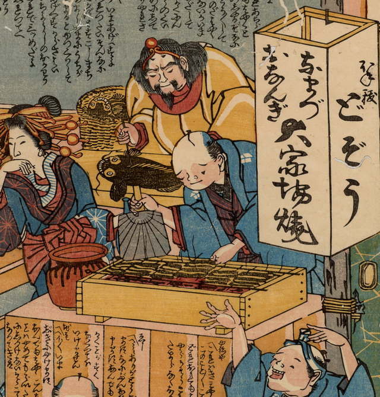

蒲焼きにされる鯰。鹿島大明神がまな板の上で鯰をさばいている。その脇の籠にも鯰が1体入っている。2体とも笑うように口を曲げ、歯を覗かせている。手前で蒲焼きを焼いているのは、地主である。
出典：親書誌：U426_nichibunken_0181：ほね抜どぞう・なまづおなんぎ大家場焼；ホネヌキドジョウナマズオナンギオオカバヤキ／日付：2010／資源識別子：U426_nichibunken_0181_0001_0000
Copyright (c)2010- International Research Center for Japanese Studies, Kyoto, Japan. All rights reserved.